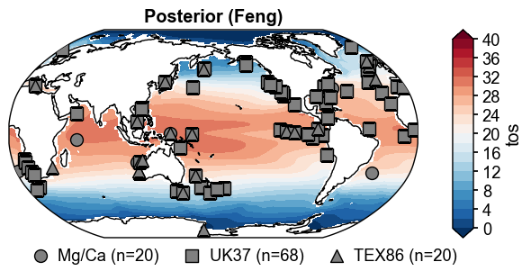
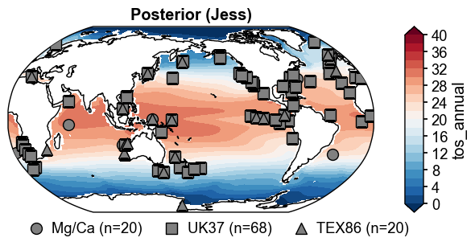
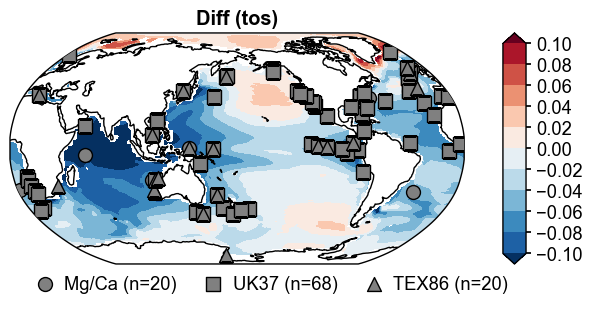

Real: Pliocene Equilibrium Reconstruction#
[1]:
%load_ext autoreload
%autoreload 2
import os
os.chdir('/glade/work/fengzhu/GitHub/cfr/docsrc/v2026/notebooks')
import pandas as pd
import xarray as xr
import numpy as np
import glob
from tqdm import tqdm
import cfr
cfr.use('v2026')
print(cfr.__version__)
octave not found, please see README
2026.5.17
[5]:
dirpath = '/lustre/desc1/p/uazn0050/fengzhu/PlioDA'
paths = sorted(glob.glob(os.path.join(dirpath, 'prior', f'*.nc')))
ds = {}
for path in tqdm(paths):
name = os.path.splitext(os.path.basename(path))[0]
ds[name] = xr.open_dataset(path)
100%|██████████| 70/70 [00:00<00:00, 150.73it/s]
[6]:
df = pd.read_excel(os.path.join(dirpath, 'prior', 'TableS3_ModelPrior.xlsx'))
plio_run_names = df['PlioceneRunName'].values
pi_run_names = df['PlioceneRunName'].values
[7]:
pm_list = []
for name in plio_run_names:
# print(name)
pm_list.append(cfr.PriorMember(ds[name]))
[8]:
%%time
prior = cfr.Prior(pm_list)
prior.ds
CPU times: user 328 ms, sys: 1.67 s, total: 2 s
Wall time: 3.5 s
[8]:
<xarray.Dataset> Size: 1GB
Dimensions: (ens: 37, month: 12, lat: 180, lon: 360)
Coordinates:
* month (month) float64 96B 1.0 2.0 3.0 4.0 5.0 ... 8.0 9.0 10.0 11.0 12.0
* lat (lat) float64 1kB -89.5 -88.5 -87.5 -86.5 ... 86.5 87.5 88.5 89.5
* lon (lon) float64 3kB 0.5 1.5 2.5 3.5 4.5 ... 356.5 357.5 358.5 359.5
Dimensions without coordinates: ens
Data variables:
pr (month, lat, lon, ens) float64 230MB 0.1576 0.1568 ... 0.6204
tas (month, lat, lon, ens) float64 230MB 249.2 248.9 ... 254.0 253.9
tos (month, lat, lon, ens) float64 230MB nan nan nan ... -1.725 -1.741
sos (month, lat, lon, ens) float64 230MB nan nan nan ... 30.96 31.19
siconc (month, lat, lon, ens) float64 230MB 0.0 nan 0.0 ... 98.84 99.38
ev (month, lat, lon, ens) float64 230MB 0.07027 0.0386 ... -0.01667[9]:
df = pd.read_csv(os.path.join(dirpath, 'proxy', 'df_proxy_midPliocene.csv'))
obs = cfr.Obs(df)
obs.setup()
obs.df
[9]:
| pid | lat | lon | depth | type | seasonality | time | value | R | psm_name | species | clean | |
|---|---|---|---|---|---|---|---|---|---|---|---|---|
| 0 | DSDP516.Mg/Ca | -30.646322 | 324.994450 | 1313.0 | Mg/Ca | 1,2,3,4,5,6,12 | 3.25 | 1.153137 | 0.0169 | MgCa | sacculifer | 0.0 |
| 1 | DSDP552.Mg/Ca | 55.593510 | 345.982189 | 2301.0 | Mg/Ca | 1,2,3,4,5,6,7,8,9,10,11,12 | 3.25 | 0.899058 | 0.0169 | MgCa | bulloides | 0.0 |
| 2 | DSDP590.Mg/Ca | -32.594207 | 162.898037 | 1299.0 | Mg/Ca | 1,2,3,4,5,12 | 3.25 | 1.157111 | 0.0169 | MgCa | sacculifer | 0.0 |
| 3 | DSDP603.Mg/Ca | 35.261855 | 290.479297 | 4640.0 | Mg/Ca | 1,2,3,4,5,6,7,8,9,10,11,12 | 3.25 | 1.381721 | 0.0169 | MgCa | bulloides | 0.0 |
| 4 | DSDP609.Mg/Ca | 49.422589 | 335.045676 | 3883.0 | Mg/Ca | 1,2,3,4,5,6,7,8,9,10,11,12 | 3.25 | 0.838967 | 0.0169 | MgCa | bulloides | 1.0 |
| ... | ... | ... | ... | ... | ... | ... | ... | ... | ... | ... | ... | ... |
| 103 | ODP959.UK37 | 3.053953 | 356.530460 | 2092.0 | UK37 | 1,2,3,4,5,6,7,8,9,10,11,12 | 3.25 | 0.955809 | 0.0025 | UK37 | NaN | NaN |
| 104 | ODP978.UK37 | 35.655501 | 357.297471 | 1929.0 | UK37 | 1,2,3,4,5,6,7,8,9,10,11,12 | 3.25 | 0.940120 | 0.0025 | UK37 | NaN | NaN |
| 105 | ODP982.UK37 | 57.058493 | 343.381278 | 1135.0 | UK37 | 1,2,3,4,5,6,7,8,9,10,11,12 | 3.25 | 0.611470 | 0.0025 | UK37 | NaN | NaN |
| 106 | ODP999.UK37 | 12.533555 | 281.067292 | 2828.0 | UK37 | 1,2,3,4,5,6,7,8,9,10,11,12 | 3.25 | 0.966871 | 0.0025 | UK37 | NaN | NaN |
| 107 | PuntaPiccola.UK37 | 37.115774 | 12.130472 | NaN | UK37 | 1,2,3,4,5,6,7,8,9,10,11,12 | 3.25 | 0.898781 | 0.0025 | UK37 | NaN | NaN |
108 rows × 12 columns
[10]:
%%time
da_solver = cfr.enkf.Solver(prior, obs)
fwd_kws = {
'MgCa': {
'age': 3.25,
'sw': 2,
'H': 0.74,
},
'TEX86': {
'mode': 'standard',
'type': 'SST',
},
'UK37': {
'order': 2,
},
}
da_solver.prep(loc_radius=12000, startover=True, get_clim_kws={'mode': 'each_member'}, **fwd_kws)
>>> Proxy System Modeling: Y = H(X)
>>> Annualizing prior w/ season: [1, 2, 3, 4, 5, 6, 7, 8, 9, 10, 11, 12]
>>> Computing the localization matrix
Processing variables: 100%|██████████| 6/6 [00:03<00:00, 1.67it/s]
CPU times: user 30.2 s, sys: 4.16 s, total: 34.3 s
Wall time: 34.5 s
[11]:
%%time
da_solver.run(debug=True, method='EnSRF')
>>> DA update
Updating time slices: 100%|██████████| 1/1 [00:00<00:00, 1.20it/s]
CPU times: user 583 ms, sys: 296 ms, total: 879 ms
Wall time: 877 ms
[12]:
obs.clim['tos']
[12]:
<xarray.DataArray 'tos' (site: 108, month: 12, ens: 37)> Size: 384kB
array([[[24.98964428, 25.52079057, 25.5379354 , ..., 26.22998639,
24.60683721, 24.03946287],
[26.14605525, 26.68145717, 26.81708031, ..., 27.50632178,
26.10616433, 25.43292147],
[26.16318037, 26.62394453, 26.8269065 , ..., 27.65054307,
26.28907888, 25.64532733],
...,
[20.51508323, 20.65533336, 20.56095535, ..., 22.0505918 ,
19.97467467, 19.8853713 ],
[21.47187967, 21.64690884, 21.5836901 , ..., 22.86629721,
20.95866565, 20.73685943],
[23.11565247, 23.50138813, 23.45586241, ..., 24.36300985,
22.5273542 , 22.09731781]],
[[13.15960312, 13.18999481, 14.73693834, ..., 12.59305271,
13.26918689, 13.63496439],
[12.8160487 , 12.85155492, 14.41613352, ..., 12.60536941,
13.13885234, 13.44034377],
[12.63055132, 12.73222439, 14.2329644 , ..., 12.66594088,
13.09130877, 13.33864956],
...
[28.81588589, 29.11561769, 29.82312085, ..., 28.60266947,
30.38756534, 30.35128148],
[28.29479923, 28.58438013, 29.45398586, ..., 28.24714082,
30.01692973, 29.94374773],
[27.15237667, 27.44973652, 28.46498738, ..., 27.63690315,
28.71819758, 28.68152386]],
[[17.27940641, 18.46155153, 18.72935137, ..., 18.59167975,
18.40038276, 18.32360715],
[16.41073158, 17.60390502, 17.72796664, ..., 17.77028834,
17.51002993, 17.34150959],
[16.32921453, 17.52017026, 17.56754889, ..., 17.59238945,
17.42921482, 17.18558818],
...,
[24.45341295, 25.92965281, 25.81198479, ..., 24.59160362,
25.74319989, 24.85062058],
[21.50087597, 22.86761732, 23.12571876, ..., 22.41095442,
22.88933679, 22.33521951],
[18.99029965, 20.17563533, 20.60739092, ..., 20.17687656,
20.19481303, 20.04177951]]], shape=(108, 12, 37))
Coordinates:
* site (site) object 864B 'DSDP516.Mg/Ca' ... 'PuntaPiccola.UK37'
* month (month) float64 96B 1.0 2.0 3.0 4.0 5.0 ... 8.0 9.0 10.0 11.0 12.0
* ens (ens) int64 296B 0 1 2 3 4 5 6 7 8 9 ... 28 29 30 31 32 33 34 35 36
lat (site, ens) float64 32kB -30.5 -30.5 -30.5 -30.5 ... 37.5 37.5 37.5
lon (site, ens) float64 32kB 324.5 324.5 324.5 324.5 ... 12.5 12.5 12.5
Attributes:
Description: Sea surface temperature
Units: Celsius[13]:
obs.records['AND1B.TEX86'].psm.clim
[13]:
<xarray.Dataset> Size: 2kB
Dimensions: (ens: 37)
Coordinates:
* ens (ens) int64 296B 0 1 2 3 4 5 6 7 8 9 ... 28 29 30 31 32 33 34 35 36
lat (ens) float64 296B -77.5 -77.5 -77.5 -77.5 ... -77.5 -76.5 -76.5
lon (ens) float64 296B 165.5 165.5 165.5 165.5 ... 171.5 165.5 165.5
site <U11 44B 'AND1B.TEX86'
Data variables:
tos (ens) float64 296B -1.755 -1.106 -1.626 ... 2.654 -0.7089 -1.034
sos (ens) float64 296B 34.71 34.08 34.33 33.85 ... 34.27 34.26 34.15[14]:
da_solver.obs.df
[14]:
| pid | lat | lon | depth | type | seasonality | time | value | R | psm_name | species | clean | pseudo | Ym | |
|---|---|---|---|---|---|---|---|---|---|---|---|---|---|---|
| 0 | DSDP516.Mg/Ca | -30.646322 | 324.994450 | 1313.0 | Mg/Ca | 1,2,3,4,5,6,12 | 3.25 | 1.153137 | 0.0169 | MgCa | sacculifer | 0.0 | [1.0475985789968556, 1.0840266910980385, 1.084... | 1.063031 |
| 1 | DSDP552.Mg/Ca | 55.593510 | 345.982189 | 2301.0 | Mg/Ca | 1,2,3,4,5,6,7,8,9,10,11,12 | 3.25 | 0.899058 | 0.0169 | MgCa | bulloides | 0.0 | [0.8790122833288491, 0.9304375599758773, 0.997... | 0.785512 |
| 2 | DSDP590.Mg/Ca | -32.594207 | 162.898037 | 1299.0 | Mg/Ca | 1,2,3,4,5,12 | 3.25 | 1.157111 | 0.0169 | MgCa | sacculifer | 0.0 | [1.0078668290061659, 1.0693127594208578, 1.064... | 1.056172 |
| 3 | DSDP603.Mg/Ca | 35.261855 | 290.479297 | 4640.0 | Mg/Ca | 1,2,3,4,5,6,7,8,9,10,11,12 | 3.25 | 1.381721 | 0.0169 | MgCa | bulloides | 0.0 | [1.3526891904768947, 1.43754172903691, 1.41165... | 1.330346 |
| 4 | DSDP609.Mg/Ca | 49.422589 | 335.045676 | 3883.0 | Mg/Ca | 1,2,3,4,5,6,7,8,9,10,11,12 | 3.25 | 0.838967 | 0.0169 | MgCa | bulloides | 1.0 | [0.6706339455958514, 0.8230265774912799, 0.756... | 0.528415 |
| ... | ... | ... | ... | ... | ... | ... | ... | ... | ... | ... | ... | ... | ... | ... |
| 103 | ODP959.UK37 | 3.053953 | 356.530460 | 2092.0 | UK37 | 1,2,3,4,5,6,7,8,9,10,11,12 | 3.25 | 0.955809 | 0.0025 | UK37 | NaN | NaN | [0.9748423127669279, 0.9783112988235072, 0.982... | 0.973247 |
| 104 | ODP978.UK37 | 35.655501 | 357.297471 | 1929.0 | UK37 | 1,2,3,4,5,6,7,8,9,10,11,12 | 3.25 | 0.940120 | 0.0025 | UK37 | NaN | NaN | [0.7704574251030296, 0.7984664965587505, 0.822... | 0.753707 |
| 105 | ODP982.UK37 | 57.058493 | 343.381278 | 1135.0 | UK37 | 1,2,3,4,5,6,7,8,9,10,11,12 | 3.25 | 0.611470 | 0.0025 | UK37 | NaN | NaN | [0.551810302904041, 0.5562428402868642, 0.6039... | 0.492307 |
| 106 | ODP999.UK37 | 12.533555 | 281.067292 | 2828.0 | UK37 | 1,2,3,4,5,6,7,8,9,10,11,12 | 3.25 | 0.966871 | 0.0025 | UK37 | NaN | NaN | [0.9369960402682951, 0.940948717815467, 0.9622... | 0.946704 |
| 107 | PuntaPiccola.UK37 | 37.115774 | 12.130472 | NaN | UK37 | 1,2,3,4,5,6,7,8,9,10,11,12 | 3.25 | 0.898781 | 0.0025 | UK37 | NaN | NaN | [0.7789384208648916, 0.8155885819627052, 0.827... | 0.760645 |
108 rows × 14 columns
[15]:
print('Prior')
gmst = da_solver.prior.ds['tas'].mean('ens').x.geo_mean().values - 273.15
print(f'GMST = {gmst:.2f}')
gmsst = da_solver.prior.ds['tos'].mean('ens').x.geo_mean().values
print(f'GMSST = {gmsst:.2f}')
print('Posterior')
gmst = da_solver.post['tas'].isel(time=0).mean('ens').x.geo_mean().values - 273.15
print(f'GMST = {gmst:.2f}')
gmsst = da_solver.post['tos'].isel(time=0).mean('ens').x.geo_mean().values
print(f'GMSST = {gmsst:.2f}')
Prior
GMST = 16.00
GMSST = 19.84
Posterior
GMST = 17.29
GMSST = 20.67
[16]:
ds_Jess = xr.open_dataset(os.path.join(dirpath, 'recons', 'pliomip-cloud_Loc24_locFixed.nc'))
ds_Jess
[16]:
<xarray.Dataset> Size: 22MB
Dimensions: (time: 3, lat: 180, lon: 360, month: 12)
Coordinates:
* time (time) float64 24B 0.0 3.25 4.75
* lat (lat) float64 1kB -89.5 -88.5 -87.5 -86.5 ... 87.5 88.5 89.5
* lon (lon) float64 3kB 0.5 1.5 2.5 3.5 ... 356.5 357.5 358.5 359.5
* month (month) float64 96B 1.0 2.0 3.0 4.0 ... 9.0 10.0 11.0 12.0
Data variables: (12/14)
pr_annual (time, lat, lon) float64 2MB ...
pr_DJF (time, lat, lon) float64 2MB ...
pr_JJA (time, lat, lon) float64 2MB ...
ev_annual (time, lat, lon) float64 2MB ...
ev_DJF (time, lat, lon) float64 2MB ...
ev_JJA (time, lat, lon) float64 2MB ...
... ...
tas_JJA (time, lat, lon) float64 2MB ...
siconc_annual (time, lat, lon) float64 2MB ...
siconc_DJF (time, lat, lon) float64 2MB ...
siconc_JJA (time, lat, lon) float64 2MB ...
tos_annual (time, lat, lon) float64 2MB ...
sos_annual (time, lat, lon) float64 2MB ...[17]:
%%time
da_Feng = da_solver.post['tos'].mean('ens')
da_Jess = ds_Jess['tos_annual'].isel(time=1)
fig, ax = da_Feng.x.plot(
levels=np.linspace(0, 40, 21),
cbar_kwargs={'ticks': np.linspace(0, 40, 11)},
cmap='RdBu_r',
title='Posterior (Feng)',
df_sites=obs.df[['lat', 'lon', 'type']],
site_marker_dict={
'Mg/Ca': 'o',
'UK37': 's',
'TEX86': '^',
},
count_site_num=True,
lgd_kws={'bbox_to_anchor': (0, -0.2)},
)
fig, ax = da_Jess.x.plot(
levels=np.linspace(0, 40, 21),
cbar_kwargs={'ticks': np.linspace(0, 40, 11)},
cmap='RdBu_r',
title='Posterior (Jess)',
df_sites=df[['lat', 'lon', 'type']],
site_marker_dict={
'Mg/Ca': 'o',
'UK37': 's',
'TEX86': '^',
},
count_site_num=True,
lgd_kws={'bbox_to_anchor': (0, -0.2)},
)
fig, ax = (da_Feng - da_Jess).x.plot(
levels=np.linspace(-0.1, 0.1, 11),
cbar_kwargs={'ticks': np.linspace(-0.1, 0.1, 11)},
cmap='RdBu_r',
title='Diff (tos)',
df_sites=df[['lat', 'lon', 'type']],
site_marker_dict={
'Mg/Ca': 'o',
'UK37': 's',
'TEX86': '^',
},
count_site_num=True,
lgd_kws={'bbox_to_anchor': (0, -0.2)},
)
CPU times: user 1.1 s, sys: 12.5 ms, total: 1.12 s
Wall time: 1.19 s



[18]:
np.max(np.abs(da_Feng - da_Jess))
[18]:
<xarray.DataArray ()> Size: 8B
array(0.14067962)
Attributes:
Units: Celsius[ ]: